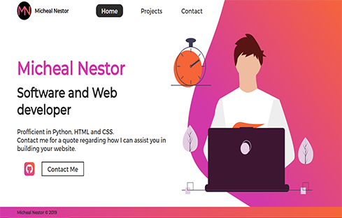
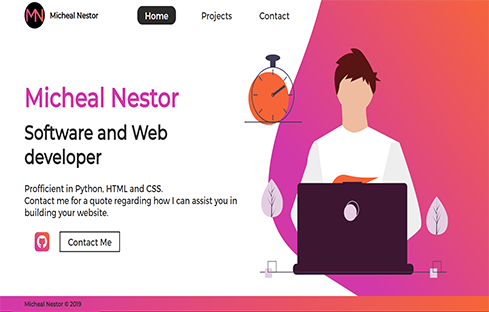

My Projects:
This is a gallery of some of coding projects with short descriptions, all source code is available on my github which is linked below each project, use the buttons at the bottom to scoll between projects.
 

Stock Market Trend Viewer:
This is a python project that takes data from yahoo finance and plots the price history of certain stocks, I built it to practice GUI design with PyQt5, webscraping with BeautifulSoup4, and graphs with matplotlib. I am pleased with the result as the main goal was learning how to link PyQt5 and Matplotlib, which was a success!
Graphical Calculator:
I created this calculator to learn and practice the python PyQt5 module. It is a module for creating graphical user interfaces in python, I used the program Qt Designer to create the interface, and then I converted the interface file into a python file, and then coded the functionality of the LCD's and buttons.
www.michealnestor.com:
This website was my first non-python project, it has allowed me to learn HTML, CSS/SAS and small amounts of JavaScript. It was unusual project for me because there was a much larger emphasis on design as the code was relatively simple. I am most proud of this project gallery and the script behind it, as well as the responsive nature of the website, delivering a good user experience across all screen sizes.